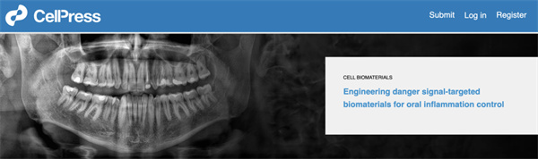

学院通知 · 教学通知
我院黄汉尧副教授/邵丹研究员团队前瞻性评述登上Cell头条
发布时间：2026/06/12
近日，我院黄汉尧副教授及邵丹研究员团队在《Cell Biomaterials》期刊上发表了重要前瞻性文章。研究成果以“Engineering danger signal-targeted biomaterials for oral inflammation control”为题发表在Cell子刊Cell Biomaterials杂志上，并登上Cell头条。四川大学华西口腔医院邵丹研究员、黄汉尧副教授为本文共同通讯作者，四川大学华西口腔医学院硕士研究生陈佳丽为第一作者。该文章提出，利用工程化生物材料靶向拦截并调控“危险信号”，将为控制口腔炎症和促进组织再生提供突破性的治疗框架。 口腔炎症性疾病是全球持续存在的健康挑战。当前的常规治疗手段虽然能够控制感染和减轻炎症，但大多无法从源头上调节引发并维持免疫系统激活的上游信号。文章提出了“危险信号生物学”作为理解口腔疾病的统一理论框架，并概述了工程化生物材料如何更精准地干预。 文章重点介绍了两类极具潜力的创新治疗策略： 1）危险信号清除型生物材料：研究涵盖了聚合物、纳米颗粒、水凝胶和微针等多种形态的工程材料，通过有效吸附或中和微环境中的危险信号，从而重塑免疫细胞与基质细胞的表型，恢复局部组织的稳态。 2）外部物理场刺激响应材料：研究指出，口腔具有易于接受外部物理干预的独特解剖优势。结合光、超声、磁场或电信号等外部刺激的响应性生物材料，能够实现对免疫反应发生时间和局部空间的精准动态控制。 该文章不仅为理解和应对复杂的口腔炎症疾病提供了统一的机制视角，还确立了以危险信号为核心的干预理念。通过将特异性靶向清除与时空动态控制技术相融合，下一代智能生物材料有望实现更加自适应、精准且个性化的免疫调节，从而为安全且高效地治愈各类口腔炎症性疾病开辟出一条全新路径。 原文链接：https://www.cell.com/cell-biomaterials/fulltext/S3050-5623(26)00118-2
